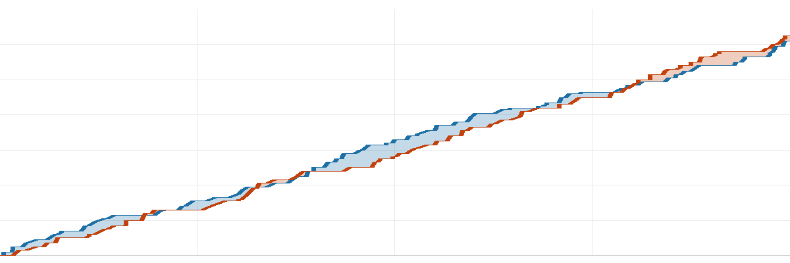

球不落·NBA 每日战报
2026-11-09美国时间
共 8 场 ｜ 每行格式：客队 比分 : 比分 主队
今天 8 场，最胶着的是步行者 122-125 独行侠：交替领先 5 次，打平 6 次，直到终场分差都没超过 5 分，独行侠一度落后 13 分。
焦点球星4 人
库里25分5板 2助·勇士 胜 鹈鹕
东契奇32分8板 10助·湖人 胜 老鹰
杜兰特23分12板 8助·火箭 胜 掘金
文班亚马40分11板 3助轰下 40 分 · 9 记盖帽·马刺 胜 太阳
今日炸裂表现上榜2 人
轰下 44 分安东尼·戴维斯44分13板 1助· 奇才 负 活塞
轰下 43 分弗拉格43分10板 6助· 独行侠 胜 步行者
今日破纪录3 条
球星2 条
詹金斯 · 生涯新高 31 分· 奇才 111-122 活塞
安东尼·戴维斯 · 生涯新高 59 分· 奇才 111-122 活塞
球队1 条
灰熊 · 终结3 连败· 灰熊 118-102 猛龙
推荐比赛1 场
夯今日最胶着
| 1 | 2 | 3 | 4 |
| 分节 | 31-26 | 35-30 | 27-34 | 29-35 |

步行者独行侠横轴为比赛进程
独行侠一度落后 13 分，翻盘赢 3 分。
| 步行者 | 西亚卡姆29分9板8助·尼斯米斯18分2板2助·祖巴茨16分3板 |
| 独行侠 | 弗拉格43分10板6助·欧文35分4助·PJ·华盛顿13分9板1助 |
|
命中率 |
三分 |
篮板 |
助攻 |
失误 |
| 步行者 |
52 | 43 | 27 | 35 | 13 |
| 独行侠 |
52 | 41 | 43 | 26 | 15 |
北京 09:00 开球 ｜ 步行者 3-8 ｜ 独行侠 7-4
其余 7 场按开球时间
人上人从落后 8 分打回来
| 1 | 2 | 3 | 4 |
| 分节 | 31-22 | 37-35 | 27-33 | 29-24 |
湖人最多领先 20 分，最终赢 10 分。
| 湖人 | 东契奇32分8板10助·马穆克拉什维利23分8板3助·凯斯勒21分10板4助 |
| 老鹰 | 麦科勒姆21分4助·亚历山大-沃克20分4板4助·奥孔古16分9板3助 |
|
命中率 |
三分 |
篮板 |
助攻 |
失误 |
| 湖人 |
53 | 43 | 40 | 30 | 16 |
| 老鹰 |
45 | 39 | 40 | 33 | 20 |
北京 08:00 开球 ｜ 湖人 10-2 ｜ 老鹰 7-5
拉赢 12 分，末节没缠斗
| 1 | 2 | 3 | 4 |
| 分节 | 28-29 | 25-40 | 27-38 | 32-17 |
骑士末节打出 32-17，但前面落后太多，最终仍差 12 分。
| 骑士 | 米利克·托马斯18分3板3助·佩顿·沃特森13分2板1助·贾莱特·阿伦12分7板1助 |
| 黄蜂 | 格雷森·阿伦27分4板6助·里德25分13板4助·萨劳恩14分3板 |
|
命中率 |
三分 |
篮板 |
助攻 |
失误 |
| 骑士 |
51 | 40 | 32 | 27 | 14 |
| 黄蜂 |
47 | 50 | 49 | 29 | 17 |
北京 08:00 开球 ｜ 骑士 5-6 ｜ 黄蜂 4-7
拉赢 11 分，末节没缠斗
| 1 | 2 | 3 | 4 |
| 分节 | 32-31 | 26-37 | 29-35 | 24-19 |
活塞最多领先 19 分，最终赢 11 分。
| 奇才 | 安东尼·戴维斯44分13板1助·AJ·迪班萨21分8板1助·特雷·杨20分1板7助 |
| 活塞 | 科林斯24分10板3助·邓肯·罗宾逊22分3板2助·詹金斯22分6板8助 |
|
命中率 |
三分 |
篮板 |
助攻 |
失误 |
| 奇才 |
46 | 25 | 46 | 16 | 19 |
| 活塞 |
47 | 26 | 45 | 31 | 11 |
北京 08:00 开球 ｜ 奇才 4-7 ｜ 活塞 7-3
今日最佳一球
安东尼·戴维斯 空中接力扣篮
奇才 111-122 活塞 · 第 4 节 剩 7:06
人上人交替领先 13 次
| 1 | 2 | 3 | 4 |
| 分节 | 25-26 | 34-27 | 30-28 | 29-21 |
灰熊最多领先 16 分，最终赢 16 分。
| 灰熊 | 泰·杰罗姆27分6板2助·布泽尔22分7板8助·格兰特17分3板2助 |
| 猛龙 | 谢德20分2板11助·巴雷特19分3板2助·珀尔特尔18分8板2助 |
|
命中率 |
三分 |
篮板 |
助攻 |
失误 |
| 灰熊 |
53 | 47 | 44 | 27 | 18 |
| 猛龙 |
43 | 34 | 34 | 27 | 14 |
北京 08:30 开球 ｜ 灰熊 7-3 ｜ 猛龙 5-5
NPC分差 10 分，中规中矩
| 1 | 2 | 3 | 4 |
| 分节 | 24-32 | 16-22 | 28-23 | 32-33 |
火箭最多领先 19 分，最终赢 10 分。
| 掘金 | 穆雷38分2板2助·约基奇25分16板9助·卡梅隆·约翰逊8分2板1助 |
| 火箭 | 杜兰特23分12板8助·申京20分12板8助·小贾巴里·史密斯14分7板3助 |
|
命中率 |
三分 |
篮板 |
助攻 |
失误 |
| 掘金 |
45 | 28 | 39 | 20 | 12 |
| 火箭 |
45 | 37 | 51 | 29 | 11 |
北京 09:30 开球 ｜ 掘金 5-4 ｜ 火箭 8-3
拉完了赢 26 分，全程没缠斗
| 1 | 2 | 3 | 4 |
| 分节 | 31-25 | 30-21 | 32-22 | 29-28 |
马刺最多领先 34 分，最终赢 26 分。
| 马刺 | 文班亚马40分11板3助·哈珀17分5板4助·福克斯15分9板6助 |
| 太阳 | 布克32分2板4助·马卢阿奇11分5板2助·狄龙·布鲁克斯7分4板 |
|
命中率 |
三分 |
篮板 |
助攻 |
失误 |
| 马刺 |
51 | 37 | 55 | 30 | 11 |
| 太阳 |
39 | 35 | 35 | 21 | 7 |
北京 10:00 开球 ｜ 马刺 9-2 ｜ 太阳 3-6
拉完了今日最平淡
| 1 | 2 | 3 | 4 |
| 分节 | 20-35 | 23-37 | 22-40 | 22-26 |
勇士最多领先 51 分，最终赢 51 分。
| 鹈鹕 | 奎恩16分4板·Murray12分3板1助·费尔斯11分3板8助 |
| 勇士 | 库里25分5板2助·波杰姆斯基25分2板4助·伦德博格23分7板4助 |
|
命中率 |
三分 |
篮板 |
助攻 |
失误 |
| 鹈鹕 |
36 | 29 | 31 | 21 | 13 |
| 勇士 |
55 | 48 | 50 | 37 | 11 |
北京 11:00 开球 ｜ 鹈鹕 4-7 ｜ 勇士 8-3
明日焦点
凯尔特人@76人
北京时间 11月11日 09:00 ｜ 76人主场
NBC 全美直播；两队战绩咬在一起（8胜2负 / 9胜2负）；詹姆斯 出战
战绩 8胜2负 / 9胜2负
另外这几场
雷霆@开拓者北京时间 11月11日 12:00
明天全联盟 6 场，上述是值得关注场次
球不落 ｜ 每天一份 NBA 战报，只写场上发生的事
本文基于公开赛事数据独立撰写，与 NBA 及任何转播平台无关联。
比赛日 2026-11-09（美国时间）｜ 数据来源：ESPN